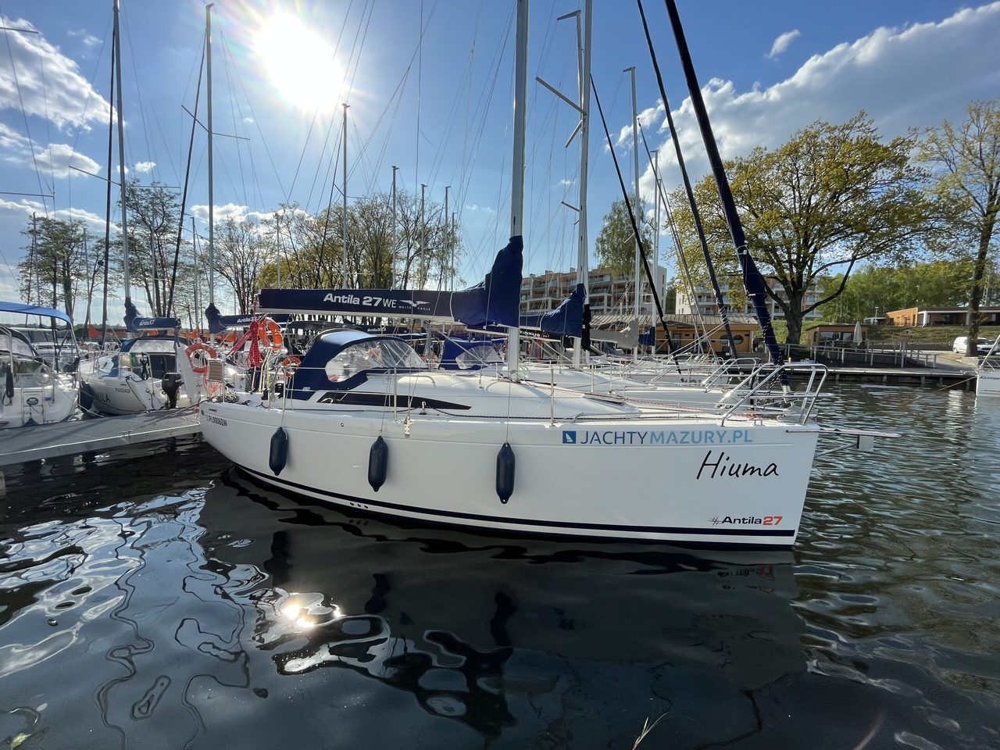

Czarter jachtów żaglowych Mazury
Czarter jachtów żaglowych na Mazurach to klasyczny wypoczynek – wybierz jacht i zaplanuj rejs po jeziorach.
Mazury od lat przyciągają miłośników wody, wiatru i przestrzeni. To region, w którym można naprawdę zwolnić tempo, nacieszyć się ciszą i spojrzeć na świat z perspektywy pokładu. Jeśli planujesz czarter jachtów na Mazurach, zyskujesz nie tylko środek transportu, ale także mobilny nocleg i bazę do odkrywania kolejnych zatok, portów i urokliwych miejsc.


Nowoczesna flota i różnorodność jednostek
Nasza baza znajduje się w dogodnej lokalizacji, a bliskość takich miejsc jak Giżycko sprawia, że start rejsu jest wygodny i szybki. Każdy port na trasie oferują zaplecze techniczne i gastronomiczne, dzięki czemu podróżowanie po jeziorach jest komfortowe.
W ofercie znajdują się zarówno jachty motorowe, jak i klasyczne konstrukcje pod żagle, a nasza flota jest regularnie serwisowana i przygotowana do sezonu. W katalogu dostępne są modele takie jak Antila czy Maxus, a każdy nowoczesny jacht zapewnia bezpieczeństwo oraz wysoki standard wyposażenia.
Dzięki temu niezależnie od tego, czy planujesz krótki rejs, czy dłuższy urlop, zawsze znajdziesz jednostkę dopasowaną do potrzeb swojej załogi.
Komfort i bezpieczeństwo podczas rejsu
Każdy komfortowy i dobrze przygotowany jacht to podstawa udanej podróży. Nasza oferta została przygotowana tak, aby zapewnić pełen komfort zarówno podczas żeglugi, jak i postoju. Przestronne kabiny, aneksy kuchenne i wygodne koje sprawiają, że nawet kilkudniowy pobyt czarterowy na wodzie jest naprawdę wygodny. Dzięki temu każdy żeglarz, niezależnie od doświadczenia, może bezpiecznie żeglować i w pełni korzystać z uroków regionu.
Jak wygląda proces czarteru? Krok po kroku
Wybór jednostki i formalności są proste:
- wybór terminu i konkretnego jachtu,
- szybka rezerwacja,
- przygotowanie załogi i planu trasy,
- odbiór jachtu w bazie oraz szkolenie wprowadzające.
Dzięki temu łatwo zaplanować wyjazd i zarezerwować jednostkę dopasowaną do liczby osób – od małego jachtu po większe jednostki dla liczniejszej załogi.
Szeroki wybór jednostek i elastyczna oferta
Jako doświadczona wypożyczalnia jachtów zapewniamy szeroki wybór łodzi dopasowanych do różnych potrzeb. W katalogu znajdują się zarówno jachty motorowe, jak i jachty żaglowe oraz houseboaty dla osób, które cenią spokojne tempo podróży.
Nasza firma oferuje czarter jachtów na Mazurach w wielu wariantach – od weekendowych po tygodniowe. Dzięki temu każdy może zdecydować się na czarter najlepiej dopasowany do planów, a bogata flota jachtów sprawia, że łatwo znaleźć odpowiednią jednostkę. To także idealne rozwiązanie dla osób, które chcą wynająć jacht lub sprawdzić, jak wygląda życie na wodzie bez konieczności kupowania własnej jednostki.
Czarter jachtów żaglowych Mazury – sposób na wyjątkowy urlop
Jeżeli marzy Ci się czarter na Mazurach, warto postawić na sprawdzone rozwiązania. Nasze jachty to zadbane jednostki gotowe do drogi, a wynajem jachtów na Mazurach obejmuje pełne wsparcie techniczne i doradztwo przy wyborze trasy.
Dla wielu osób najlepszym wyborem jest wynajem jachtu żaglowego, który pozwala odkrywać kolejne zatoki i malownicze fragmenty jezior.
Warto zdecydować się na czarter i przeżyć Mazury naprawdę!
Nie bez powodu tak wiele osób uważa, że warto zdecydować się na czarter i zobaczyć region z perspektywy wody.
Obserwujemy rosnące zainteresowanie ofertą, dlatego jeśli planujesz urlop, najlepiej wcześniej zarezerwować swój wymarzony jacht.
Jeśli marzysz o spokojnym rejsie, chcesz wynająć jednostkę na weekend albo po prostu sprawdzić, czy taka forma wypoczynku jest dla Ciebie – Mazury są miejscem, do którego naprawdę chce się wracać. A kiedy już raz poczujesz wiatr w żaglach, istnieje spora szansa, że stanie się to Twoją nową wakacyjną tradycją.
Wybrałeś termin?
Sprawdź, które jachty są wolne, albo zadzwoń do biura.